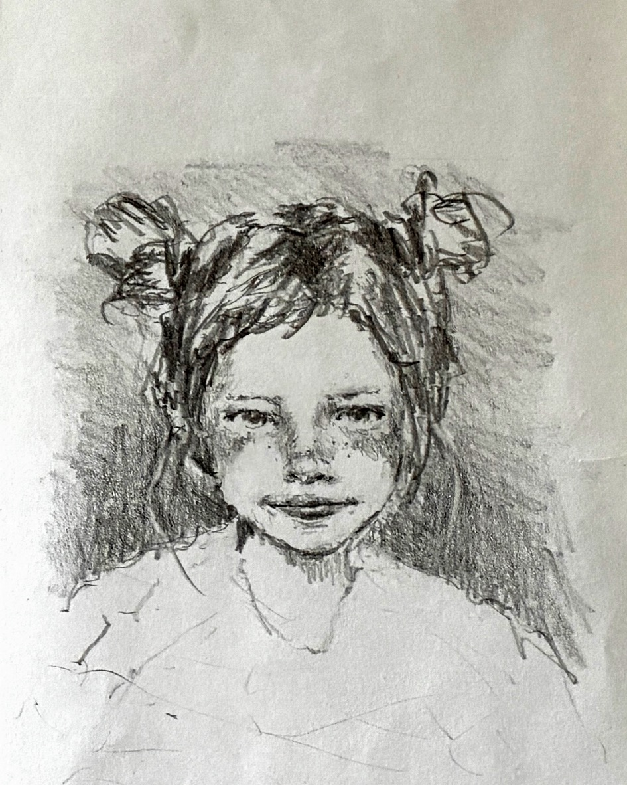

制作背景
この作品は「二面性」をテーマに制作しました。誰もが持つ表と裏、光と影——そのどちらも嘘ではなく、どちらも自分自身であるという感覚を、一枚の絵に閉じ込めたいと思いました。
日常の中でふと感じる「本当の自分はどちらだろう」という問いに、答えを出すのではなく、問いそのものを描くことを目指しています。
プロセス
まず大まかな構図をラフスケッチで決め、ケント紙に薄く下描きを入れました。Hi-uni の B〜2B を使い、明暗のコントラストを意識しながら少しずつ調子を重ねていきます。
特にこだわったのは、顔の中心を境にした左右の描き分けです。片側はシャープな線で輪郭を強調し、もう片側は柔らかいグラデーションで溶け込むような表現を試みました。

振り返り
完成した作品を眺めると、当初の意図とは少し異なる表情が浮かび上がっていました。計画通りにならないことが、鉛筆画の面白さでもあり怖さでもあります。
この経験は、以降の作品にも影響を与えています。コントロールしきれない部分を「失敗」ではなく「発見」として受け入れること——それが、描き続ける理由のひとつになっています。